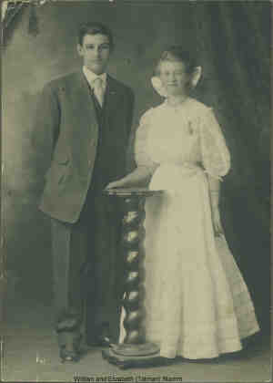

|
| 
Elizabeth Rowena TATMAN (1890-1959) |
Elizabeth Rowena TATMAN 173,174,175
General Notes: Died at home of Velma Lorraine Stamm and William Pippert. 172 Noted events in her life were: • Census, 26 Apr 1910, Visalia, Tulare Co., California, USA. 174,176 • Census, 5 Jan 1920, Visalia, Tulare Co., California, USA. 171 Elizabeth married William Adolph STAMM, son of Adolph STAMM and Anna Marie MUELLER, on 12 May 1908 in Visalia, Tulare Co., California, USA.170 (William Adolph STAMM was born on 11 Aug 1886 in Highland, Madison Co., Illinois, USA 177,178 and died on 6 Jul 1912 in Visalia, Tulare Co., California, USA 175,177,178.) Elizabeth next married Mathew JUNGWIRTH, son of Unknown and Unknown, on 24 Jun 1919 171.,172 (Mathew JUNGWIRTH was born on 10 Feb 1894 in Zell, Faulk Co., South Dakota, USA 171,172 and died on 13 Jan 1949 in , Tulare Co., California, USA 172.) Elizabeth next married Joseph JUNGWIRTH, son of Unknown and Unknown, on 4 Nov 1950.172 (Joseph JUNGWIRTH was born on 29 Feb 1884 in Zell, Faulk Co., South Dakota, USA and died on 16 Aug 1951 in , Tulare Co., California, USA.) |
Search using Google Custom Search:
Table of Contents | Surnames | Name List
This website was created 2 Mar 2025 with Legacy 10.0, a division of MyHeritage.com; content copyrighted and maintained by coddgenealogy at gmail d0t com